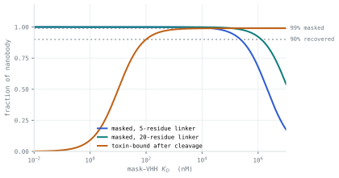
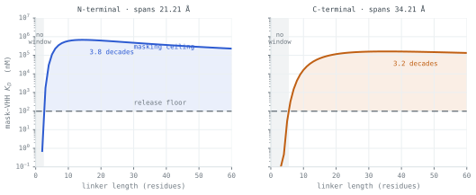

A protease-activated nanobody mask
A nanobody that stays inert in circulation and binds toxin only after a protease cuts its tether. The regulatory part lives in a separate mask and linker, so an established neutralizing nanobody carries over unchanged. Everything below is computed from one experimental structure.
The pipeline, as built
The order matters more than the parts. The structure is measured first and the tether priced second, so the attachment point, the linker length and the useful range of mask affinities are all settled before any candidate is generated. Everything after that searches inside a space the geometry has already narrowed.
Three states, one chain
A single polypeptide: designed mask M, protease-cleavable linker L, fixed nanobody N. Cleavage severs the tether, the mask diffuses away, and the original paratope is free to take toxin T.
Where the paratope is, and where a mask could attach
Co-crystal VHH (TPL1158_01_C09) - alpha-cobratoxin (Naja kaouthia), x-ray diffraction at 3.0 Å, deposited 2024-08-02. Four independent copies sit in the asymmetric unit, so the interface is measured four times and the spread is a free reproducibility check.

| geometry | Å | consequence |
|---|---|---|
| N-terminus to paratope centroid | 11.78 | a short linker already reaches |
| N-terminus to nearest paratope residue | 0.0 | the N-terminus is in the paratope |
| C-terminus to paratope centroid | 41.95 | 3.6× further to span |
| paratope maximum extent | 21.75 | surface a mask must cover |
| nanobody radius of gyration | 14.84 | scale reference |
9GCN chains A and X, as deposited.
Masking and release pull in opposite directions
A tethered mask behaves as if present at an effective concentration set by the linker. Treating the Gly/Ser linker as a worm-like chain with persistence length 4.5 Å and 3.8 Å per residue, the end-to-end distribution gives Ceff at the distance the linker has to span — a distance measured in stage 1, not assumed.
Ceff(d) = 1660.54 · (3 / 2π⟨r²⟩)3/2 · e−3d²/2⟨r²⟩ [M]
Pmasked = Ceff / (Ceff + KD,M)
PNT = (T/KD,T) / (1 + T/KD,T + M/KD,M)




Taken from the structure, with controls
A mask has to engage this paratope. One peptide is already known to: the antigen's own contact segment. Grafting it needs no generative model, and the scrambled, truncated and inert versions give the comparison its meaning.
| antigen segment | sequence | length | contacts |
|---|---|---|---|
| R33–V37 | RGKRV | 5 | 5 |
| W25–F29 | WCDAF | 5 | 4 |
| T6–I9 | TPDI | 4 | 3 |
| mask | sequence | aa | kind | origin |
|---|---|---|---|---|
| epi1 | RGKRV | 5 | epitope graft | antigen R33-V37, 5 contact residues |
| epi1_half | RGK | 3 | truncated control | leading half of the graft |
| epi1_scram | RGKVR | 5 | scrambled control | same composition, shuffled (seed 42) |
| epi2 | WCDAF | 5 | epitope graft | antigen W25-F29, 4 contact residues |
| polyG | GGGGGGGG | 8 | inert control | no designed interaction; masking should fail |
Predicted structures
Each construct folded from sequence alone. Pick one to inspect: the mask is tethered at the N-terminus and the paratope is drawn as sticks, so whether the mask covers it is visible directly.
Does the mask actually reach the paratope?
Every construct folded with ESMFold, then the paratope's solvent-accessible surface in the fusion compared against the same residues in the folded free nanobody. The grafts are read against their scrambled, truncated and inert controls at matched linker length; the controls are the reason the comparison means anything.


| construct | kind | linker | occluded % | min CA–CA Å | contacts <8 Å | VHH pLDDT | core RMSD Å |
|---|---|---|---|---|---|---|---|
| polyG_L20 | inert control | 20 | +28.6 | 2.4 | 24 | 85 | 0.18 |
| epi1_L5 | epitope graft | 5 | +26.4 | 4.19 | 16 | 90 | 0.18 |
| epi1_half_L30 | truncated control | 30 | +26.3 | 9.52 | 0 | 85 | 0.20 |
| polyG_L30 | inert control | 30 | +23.2 | 2.89 | 14 | 84 | 0.21 |
| epi1_scram_L20 | scrambled control | 20 | +20.0 | 6.26 | 7 | 86 | 0.18 |
| epi1_scram_L5 | scrambled control | 5 | +17.9 | 4.93 | 9 | 89 | 0.26 |
| epi1_half_L5 | truncated control | 5 | +17.7 | 3.77 | 13 | 90 | 0.44 |
| epi1_L30 | epitope graft | 30 | +17.2 | 10.32 | 0 | 84 | 0.20 |
| epi1_L10 | epitope graft | 10 | +16.5 | 6.02 | 5 | 88 | 0.14 |
| epi1_scram_L15 | scrambled control | 15 | +14.9 | 11.54 | 0 | 87 | 0.14 |
| epi2_L30 | epitope graft | 30 | +14.5 | 12.08 | 0 | 84 | 0.20 |
| epi1_scram_L30 | scrambled control | 30 | +14.2 | 15.85 | 0 | 84 | 0.19 |
| epi1_L15 | epitope graft | 15 | +14.1 | 11.78 | 0 | 87 | 0.14 |
| polyG_L10 | inert control | 10 | +13.9 | 5.63 | 2 | 88 | 0.15 |
| epi1_scram_L10 | scrambled control | 10 | +13.7 | 7.36 | 2 | 88 | 0.13 |
| epi2_L20 | epitope graft | 20 | +13.3 | 12.96 | 0 | 86 | 0.16 |
| polyG_L5 | inert control | 5 | +12.6 | 6.67 | 6 | 89 | 0.14 |
| epi1_half_L15 | truncated control | 15 | +12.6 | 16.29 | 0 | 87 | 0.14 |
| epi2_L15 | epitope graft | 15 | +12.4 | 10.56 | 0 | 87 | 0.16 |
| epi1_L20 | epitope graft | 20 | +12.4 | 9.07 | 0 | 86 | 0.16 |
| epi1_half_L20 | truncated control | 20 | +12.3 | 14.29 | 0 | 86 | 0.16 |
| polyG_L15 | inert control | 15 | +12.3 | 6.92 | 1 | 86 | 0.14 |
| epi1_half_L10 | truncated control | 10 | +10.8 | 8.85 | 0 | 89 | 0.12 |
| epi2_L5 | epitope graft | 5 | +8.6 | 9.34 | 0 | 89 | 0.15 |
| epi2_L10 | epitope graft | 10 | +7.7 | 9.12 | 0 | 88 | 0.16 |
What is not computed here
| component | what it would add | what it needs |
|---|---|---|
| RFdiffusion · BindCraft | mask backbones beyond grafted epitopes | GPU BindCraft also wants AF2 weights and PyRosetta |
| AlphaFold 3 · Boltz-2 · Chai-1 | the nanobody–toxin complex and mask–toxin competition | GPU model access |
| BioEmu-2 | conformational ensembles in place of one structure | GPU multichain support is recent |
| CleaveNet | linkers generated against a target cleavage profile | data trained on 18 human MMPs; venom metalloproteinases are out of distribution |
| Trigger selectivity | cleavage by the local protease ensemble, resistance elsewhere | data peptide-cleavage measurements that do not exist yet |
Where the numbers come from
Every value and every chart here is produced by the analysis code, run in eight stages against one deposited structure. Each stage writes its results to a file and this page is generated from those files, so nothing is typed in by hand. The folding and design stages run on CPU; a GPU only makes them faster.
| stage | method | what it produces |
|---|---|---|
| Measure the complex | Shrake-Rupley surface burial | paratope, CDRs, terminal geometry |
| Price the tether | worm-like chain | effective concentration, masking ceiling, release floor |
| Build the library | antigen epitope graft, with controls | mask x linker constructs |
| Fold and measure | ESMFold | paratope occlusion per construct |
| Redesign the mask | ProteinMPNN | new masks on the folded backbone |
| Refold | ESMFold | occlusion for the redesigns |
| Test the competition | Boltz-2 | two-chain complex with the toxin |
| Report | — | this page |
Code and stage outputs: github.com/Natalija-Stepurko/dtu_postdoc
Sources
- Damsbo A. et al. Co-crystal of VHH TPL1158_01_C09 with α-cobratoxin. PDB 9GCN
- Ahmadi S. et al. Nanobody-based recombinant antivenom for cobra, mamba and rinkhals bites. Nature 647:716–725 (2025). 10.1038/s41586-025-09661-0
- Desnoyers L.R. et al. Tumor-specific activation of an EGFR-targeting probody. Science Translational Medicine 5:207ra144 (2013). 10.1126/scitranslmed.3006682
- Zhou H.-X. Loops in proteins can be modeled as worm-like chains. Journal of Physical Chemistry B 105:6763–6766 (2001). 10.1021/jp011355n
- Lin Z. et al. Evolutionary-scale prediction of atomic-level protein structure with a language model. Science 379:1123–1130 (2023). 10.1126/science.ade2574
- Shrake A., Rupley J.A. Environment and exposure to solvent of protein atoms. Journal of Molecular Biology 79:351–371 (1973). 10.1016/0022-2836(73)90011-9
- Martin-Alonso C. et al. Deep learning guided design of protease substrates. Nature Communications 17:54 (2026). 10.1038/s41467-025-67226-1
- Pacesa M. et al. One-shot design of functional protein binders with BindCraft. Nature 646:483–492 (2025). 10.1038/s41586-025-09429-6
- Bennett N.R. et al. Atomically accurate de novo design of antibodies with RFdiffusion. Nature 649:183–193 (2025). 10.1038/s41586-025-09721-5